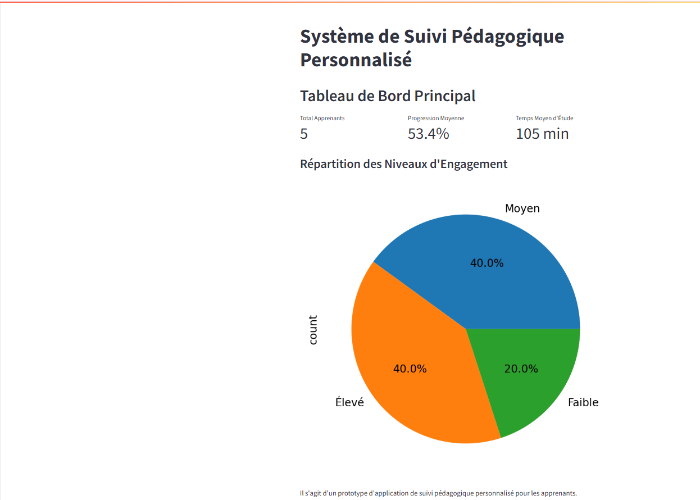

Newsletter Portfolio
31/03/2025
Découvrez mes derniers projets et réalisations dans cette newsletter hebdomadaire.
Récits visuels, horizons numériques :
Chaque newsletter, un voyage entre données, créativité et découvertes

cope-process-documentation

Architecture Modulaire à Base de Contenu

voyages
tresor-eauze

suivi-pedagogique
sources-inspiration-voyages
cope-process-documentation
title: Processus de Publication Cross-Platform (COPE - Create Once, Publish Everywhere)
description:  author: Alexia Fontaine
date: 2025-03-28
type: summary
image: /img/Process_COPE.png
author: Alexia Fontaine
date: 2025-03-28
type: summary
image: /img/Process_COPE.png
Processus de Publication Cross-Platform (COPE - Create Once, Publish Everywhere)
1. Création du Contenu (Source Unique)
- Rédaction de documents Markdown dans le portfolio
- Création/mise à jour des fichiers .md dans le dossier "docs" du dépôt portfolio - Utilisation du format frontmatter YAML pour les métadonnées (titre, description, tags) - Inclusion d'images et autres médias dans le dossier "img"
2. Génération Automatique de la Newsletter
- Détection des contenus récents
- Scan des fichiers Markdown modifiés récemment - Filtrage en fonction de la date de modification (7 derniers jours) - Sélection des projets les plus récents (limité à 6)
- Extraction et traitement du contenu
- Analyse du frontmatter YAML pour extraire les métadonnées - Conversion du Markdown en HTML - Génération de résumés pour chaque projet (limités à 250 caractères) - Récupération des images associées aux projets
- Compilation en format standardisé
- Création d'un document Markdown unifié avec tous les projets - Génération d'un document HTML avec mise en page responsive - Structuration avec cartes de projets, sections détaillées et table des matières - Application d'un design cohérent (CSS personnalisé)
3. Publication sur GitHub Pages
- Préparation des fichiers
- Génération des fichiers HTML/Markdown dans le dossier de sortie - Copie des ressources requises (images) - Création de liens symboliques vers la dernière newsletter
- Organisation du site
- Création d'une page d'index redirigeant vers la dernière newsletter - Génération d'une page d'archives listant toutes les newsletters - Ajout de fichiers de configuration (.nojekyll)
- Déploiement
- Création d'un commit avec les nouveaux fichiers - Déploiement vers la branche gh-pages - Configuration pour l'accès public
4. Publication sur LinkedIn
- Préparation du contenu pour LinkedIn
- Extraction du titre et de la date de la newsletter - Récupération des titres des projets pour créer un sommaire - Formatage du contenu selon les bonnes pratiques LinkedIn (emojis, mise en forme) - Ajout de hashtags pertinents
- Gestion des doublons et limitations
- Génération d'un hash pour identifier les contenus uniques - Vérification pour éviter les publications en double - Ajout d'horodatage pour rendre le contenu unique si nécessaire - Gestion des limites de taux d'API (rate limits) avec backoff exponentiel
- Interaction avec l'API LinkedIn
- Authentification via token d'accès - Construction de la requête API avec le texte et l'URL - Gestion des erreurs et tentatives multiples - Traitement des différents codes de réponse
5. Suivi et Maintenance
- Enregistrement des activités
- Journalisation détaillée des actions (logging) - Création d'un fichier de suivi des publications - Commits automatiques pour tracer l'historique des publications
- Mécanismes de déclenchement
- Exécution planifiée hebdomadaire (tous les lundis) - Possibilité de déclenchement manuel - Chaînage des workflows (le second s'exécute après le premier)
- Gestion des erreurs
- Détection et rapport des problèmes - Mécanismes de reprise sur erreur - Statuts d'achèvement conditionnels
Cette architecture COPE permet de : 1. Maintenir une source unique de vérité (fichiers Markdown) 2.
Mots-clés: architecture, publications, complètement, automatiser, publication
Le système est également extensible pour intégrer d'autres plateformes de publication (Twitter, Medium, etc.) en suivant le même modèle modulaire.
Mots-clés: publication, plateformes, extensible, modulaire, également
Retour en hautArchitecture Modulaire à Base de Contenu
Architecture Modulaire à Base de Contenu
L'Architecture Modulaire à Base de Contenu (ou "Content-Driven Modular Architecture") représente une approche moderne et flexible pour concevoir des sites web et des applications. Cette méthodologie place le contenu au centre du processus de développement, en le séparant strictement de la présentation.
Mots-clés: développement, architecture, contentdriven, méthodologie, applications
Principes fondamentaux
Cette architecture repose sur plusieurs principes clés qui la rendent particulièrement efficace pour les sites riches en contenu comme les portfolios et les blogs :
Mots-clés: architecture, portfolios, principes, plusieurs
Le contenu est stocké dans des fichiers indépendants (souvent au format Markdown) avec des métadonnées standardisées (frontmatter), complètement séparés du code HTML, CSS et JavaScript qui définit leur présentation. Cette séparation permet à chaque aspect d'évoluer indépendamment.
Mots-clés: standardisées, indépendance, présentation
Les sections et composants peuvent être facilement réutilisés, réorganisés ou recombinés pour créer de nouvelles pages ou expériences. Cette flexibilité permet d'assembler rapidement différentes vues à partir des mêmes éléments de base.
Mots-clés: expériences, réorganisation, flexibilité
Modifier un contenu n'exige pas de toucher au code HTML principal. Les rédacteurs de contenu peuvent se concentrer uniquement sur les fichiers Markdown pertinents, sans risquer d'altérer la structure ou le fonctionnement du site.
Mots-clés: fonctionnement, pertinents, concentrer, uniquement, rédacteurs
Ajouter une nouvelle section est aussi simple que de créer un nouveau fichier Markdown. Cette approche réduit considérablement la friction pour enrichir le site avec de nouveaux contenus.
Mots-clés: contenus
Implémentation pratique
Pour les composants simples, le Markdown pur suffit généralement. Cependant, pour les composants plus complexes comme les grilles de compétences, les cartes de services, ou les processus multi-étapes, l'HTML embarqué dans Markdown offre le meilleur compromis :
Cette approche hybride permet de préserver le rendu visuel des composants complexes tout en profitant pleinement de la modularité du système.
Mots-clés: multiétapes, compétences, composants, markdown, modularité, composants, complexes
Avantages à long terme
Au-delà des bénéfices immédiats, cette architecture offre des avantages substantiels sur le long terme :
- Transitions technologiques facilitées - Le contenu peut être conservé même si le framework ou la technologie de présentation change
- Versionning efficace - Les modifications de contenu sont clairement visibles dans les commits Git
- Possibilités de migration accrues - Le contenu peut être facilement exporté vers d'autres systèmes
- Optimisation du workflow - Les designers et développeurs peuvent travailler sur l'interface pendant que les rédacteurs créent le contenu
Cette architecture représente une évolution naturelle des systèmes de gestion de contenu traditionnels, offrant davantage de flexibilité tout en conservant une structure claire et organisée.
Mots-clés: architecture, flexibilité
1. Séparation du contenu et de la présentation
Le contenu est stocké dans des fichiers indépendants (souvent au format Markdown) avec des métadonnées standardisées (frontmatter), complètement séparés du code HTML, CSS et JavaScript qui définit leur présentation. Cette séparation permet à chaque aspect d'évoluer indépendamment.
Mots-clés: indépendance, standardisés, présentation
2. Composabilité
Les sections et composants peuvent être facilement réutilisés, réorganisés ou recombinés pour créer de nouvelles pages ou expériences. Cette flexibilité permet d'assembler rapidement différentes vues à partir des mêmes éléments de base.
Mots-clés: flexibilité
3. Maintenabilité
Modifier un contenu n'exige pas de toucher au code HTML principal. Les rédacteurs de contenu peuvent se concentrer uniquement sur les fichiers Markdown pertinents, sans risquer d'altérer la structure ou le fonctionnement du site.
Mots-clés: pertinents, rédacteurs
4. Évolutivité
Ajouter une nouvelle section est aussi simple que de créer un nouveau fichier Markdown. Cette approche réduit considérablement la friction pour enrichir le site avec de nouveaux contenus.
Mots-clés: enrichir, contenus
Retour en hautvoyages
Voyages et Découvertes
Sources d'Inspiration et Explorations Culturelles
Image de Référence

Philosophie des Voyages
Les voyages comme sources inépuisables d'inspiration, de découvertes et de compréhension interculturelle.
Approche
- Exploration attentive aux détails culturels
- Développement d'une sensibilité interculturelle
- Éveil de tous les sens
Projets et Séries
1. Série Bali Inspirations
Design Graphique et Culture
- Thème: Motifs traditionnels balinais
- Technique: Réinterprétation contemporaine
- Objectif: Fusion de l'héritage ancestral avec une esthétique moderne
Documentation Vidéo
2. Voyage Sensoriel
Exploration Multisensorielle
- Concept: La dégustation comme exploration culturelle
- Approche: Combinaison de :
- Connaissances techniques
- Sensibilité perceptive
- Contexte historique
Grille Sensorielle
- Observer
- Sentir
- Goûter
- Écouter
- Toucher
Documentation Vidéo
3. Carnets de Voyage
Narration Visuelle
- Contenu:
- Notes
- Croquis
- Photographies
- Technique: Méthode mixte
- Illustrations
- Collages
- Annotations personnelles
Documentation Vidéo
Dimensions des Voyages
- Culturelle: Immersion dans les traditions locales
- Artistique: Capture des nuances visuelles
- Personnelle: Transformation et croissance individuelle
Techniques de Documentation
- Photographie
- Illustration
- Écriture
- Enregistrements sonores
- Collecte d'objets et de matériaux
Principes Directeurs
- Observation profonde
- Respect des cultures
- Ouverture à l'inattendu
- Transformation par l'expérience
Impact
- Enrichissement personnel
- Développement d'une perspective globale
- Inspiration pour projets créatifs
- Compréhension interculturelle approfondie
Citation Inspirante
Retour en hautLes voyages sont des fragments de rêves cousus ensemble par la curiosité et l'émerveillement.
tresor-eauze
Trésor d'Eauze : Patrimoine Numérique Interactif
Présentation du Projet
Un projet de valorisation du patrimoine culturel qui combine photographie, recherche historique et conception d'expériences interactives pour rendre accessibles des trésors culturels.
Objectifs
- Préserver et valoriser le patrimoine archéologique
- Créer une expérience de médiation culturelle immersive
- Rendre l'histoire accessible à un large public
Technologies Utilisées
- Modélisation 3D
- Recherche Historique
- Médiation Culturelle
- Web Design
- Photogrammétrie
Capture d'Écran

Lien du Projet
Description Détaillée
Cette initiative démontre comment les technologies numériques peuvent servir la préservation et la médiation culturelle, en transformant des objets archéologiques en expériences interactives.
Approche
- Documentation visuelle approfondie
- Modélisation 3D d'objets archéologiques
- Contextualisation historique riche
- Création d'une expérience numérique immersive
Compétences Mises en Œuvre
- Photographie documentaire
- Modélisation 3D
- Recherche historique
- Conception d'expériences interactives
- Médiation culturelle numérique
Objets Numérisés
- Bague à sceau
- Bague aux camées
- Autres artefacts archéologiques
Impact
- Préservation numérique du patrimoine
- Accessibilité accrue à l'histoire locale
- Innovation dans la médiation culturelle
Techniques de Numérisation
- Photogrammétrie
- Acquisition multi-angles
- Traitement photographique avancé
- Reconstruction 3D détaillée
Exploration Interactive
Le projet permet aux utilisateurs de : - Explorer des objets historiques en détail - Comprendre le contexte archéologique - Découvrir l'histoire à travers des expériences immersives
Retour en hautsuivi-pedagogique
Prototype de Suivi Pédagogique
Présentation du Projet
Un prototype d'application conçu pour aider au suivi et à l'analyse de la progression des apprenants.
Fonctionnalités Principales
- Suivi de la progression des apprenants
- Génération de rapports d'analyse automatiques
- Identification des apprenants nécessitant un accompagnement personnalisé
Technologies Utilisées
- UX Design
- Tableau de bord
- Analyse de Données
- Python
- Visualisation de données
Capture d'Écran

Lien du Projet
Explorer l'Application de Suivi Pédagogique
Objectifs
- Faciliter le suivi des performances des apprenants
- Fournir des insights détaillés sur la progression
- Permettre une intervention personnalisée et ciblée
Fonctionnalités Détaillées
- Analyse comparative des performances
- Tableaux de bord interactifs
- Systèmes d'alerte pour les apprenants en difficulté
- Visualisation graphique des progrès
Compétences Mises en Œuvre
- Analyse de données éducatives
- Développement d'interfaces de suivi
- Conception de systèmes d'analyse prédictive
- Visualisation de données pédagogiques
sources-inspiration-voyages
Sources d'Inspiration : Les Voyages
Image Représentative
Philosophie des Voyages
Les voyages comme source intarissable de découvertes, de compréhension et de transformation personnelle.
Dimensions de l'Exploration
Approche Sensorielle
- Éveil de tous les sens
- Immersion totale
- Perception multidimensionnelle
Processus de Découverte
- Observation Attentive
- Détails culturels
- Nuances locales
-
Pratiques quotidiennes
-
Interaction Profonde
- Échanges humains
- Compréhension des traditions
- Dialogue interculturel
Transformation Personnelle
Développement de la Sensibilité
- Élargissement de la perspective
- Remise en question des préjugés
- Développement de l'empathie culturelle
Enrichissement Intellectuel
- Accumulation de connaissances
- Compréhension des systèmes culturels
- Déconstruction des narratifs simplistes
Méthodes de Documentation
Carnets de Voyage
- Croquis
- Notes manuscrites
- Photographies
- Collecte d'objets
- Annotations sensorielles
Techniques de Capture
- Photographie documentaire
- Illustration
- Écriture réflexive
- Enregistrements sonores
Régions et Inspirations
Asie du Sud-Est
- Bali
- Traditions artisanales
- Philosophies spirituelles
- Motifs culturels
Traditions Européennes
- Pratiques locales
- Patrimoine culturel
- Dynamiques sociales
Impact Créatif
Transformation des Expériences
- Inspiration pour projets artistiques
- Intégration dans les créations
- Réinterprétation culturelle
Projets Développés
- Série "Bali Inspirations"
- "Voyage Sensoriel"
- Carnets de voyage multimédias
Philosophie
"Voyager, c'est observer le monde comme un livre ouvert, où chaque expérience est une page à comprendre et à interpréter."
Compétences Développées
- Observation interculturelle
- Adaptation
- Communication non-verbale
- Pensée comparative
- Créativité contextuelle
Conclusion
Les voyages comme processus continu d'apprentissage, de découverte et de transformation personnelle et créative.
Retour en haut